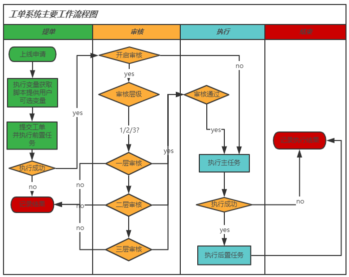

1. 概述¶
skstack插件库主要配合skstack web平台的工单系统使用，结合skstack工单系统，可以实现工单审核和自动化执行等功能；插件也可以作为独立的脚本使用。
skstack官方插件基于python开发，所有官方插件均遵循下文中定义的目录和命名规范
skstack官方插件的python版本与skstack web平台的python版本保持一致。
skstack每个官方插件包含如下脚本和文件
前置任务脚本：对应工单系统的前置任务配置项，是主任务执行之前先执行的任务脚本，一般用来做一些前置检查；非必须项
主任务脚本：对应工单系统的主任务配置项目，是主要任务功能脚本；必须项
后置任务脚本：对应工单系统的后置任务配置项，主任务执行成功后的，会执行后置任务脚本；非必须项
变量获取脚本：用于工单系统交互界面获取可选list变量；非必须；
子任务脚本：用于给前置、主、后置任务调用的脚本，不会单独执行。
配置文件：各脚本读取的配置参数，必须项
私有库和模块：各脚本共用的模块，非必须
1.1. 工作原理¶
注解
前置任务未非必须项，若没有会跳过改执行步骤
后置任务未非必须项，若没有会跳过改执行步骤
只有变量注册为通过变量脚本获取的可选变量时才会执行变量获取脚本。没有则跳过该步骤
1.2. 安装步骤¶
下载插件库：git clone <skstack_plugins_git_url>
安装python 虚拟机：略。tips：若已安装skstack web系统，请忽略该步骤，直接使用skstack web平台的python虚拟机即可
安装依赖库：切换到skstack python虚拟机执行 pip install -r requirements.txt
1.3. 目录规范¶
目录介绍
(skstack) [root@registry soft]# tree -d skstack_plugins
skstack_plugins #插件库主目录
├── conf_pub #插件库公共配置文件目录，如日志路径定义参数
├── lib_pub #插件库公共库文件和函数模块位置，如日志格式化函数，配置文件加载函数
├── pl_ansible #ansible功能插件主目录
│ ├── conf #所属功能插件配置文件目录
│ └── lib_pri #所属功能插件私有库目录，该功能插件多个脚本可以共用的私有函数和类保存到该文件夹
├── pl_deploy_docker #docker部署功能插件主目录
│ └── conf
├── pl_deploy_git #git部署功能插件主目录
│ ├── conf
│ ├── lib_pri
└── pl_deploy_package #压缩包部署功能插件主目录
├── conf
├── lib_pri
1.4. 公共配置文件配置说明¶
配置参数通过json文件里面定义的字典方式进行引用
公共配置文件目前版本只定义所有官方插件的日志根路径
最佳实践为不同环境单独使用一个配置文件，如生产配置文件prod_conf.json 使用demo.json复制
配置文件强制遵循命名规范，必须以”_conf.json”结尾，否则各插件无法应用
(skstack) [root@registry skstack_plugins]# tree conf_pub/
conf_pub/
├── demo.json
├── prod_conf.json
└── stage_conf.json
(skstack) [root@registry skstack_plugins]# more conf_pub/demo.json
{
"log_path":"/opt/sklogs/" #定义所有插件的日志根目录
}
1.5. 功能插件目录和文件说明¶
以git部署插件为例说明
[root@registry skstack_plugins]# tree pl_deploy_git/
pl_deploy_git/ #插件主目录
├── conf #插件配置文件目录
│ ├── demo.json #示例配置文件
│ ├── prod_conf.json #prod环境配置文件，
│ └── stage_conf.json #stage环境配置文件
├── __init__.py
├── lib_pri
│ ├── git.py
├── main_git_deploy.py #主任务脚本
├── pre_git_pull.py #前置任务脚本
├── sc_static_sync.yml #被调用的任务脚本
└── var_git_commit_id.py #变量获取脚本
1.6. 命名规范¶
插件目录命名：加pl_前缀
前置任务脚本：加pre_前缀,
主任务脚本：加main_前缀
后置任务脚本：加post_前缀
变量获取脚本：加var_前缀
配置文件命名：加_conf.json后缀
脚本文件命名：加sc_前缀；脚本文件主要用于主任务脚本调用
私有库目录：lib_pri；私有库函数主要用于主任务脚本或者sc_脚本调用
日志文件命名：”插件主目录名称+.log” ;如pl_deploy_git.log